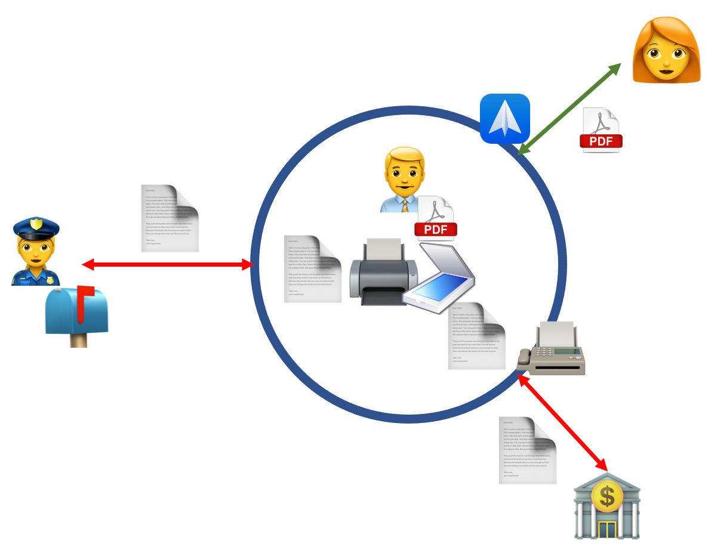
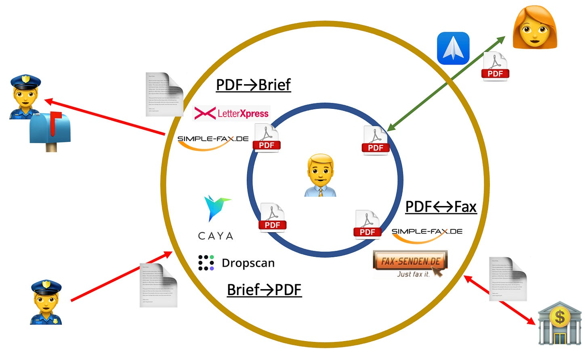

Digitalisierungsbrücken zu analogen Geschäftspartnern
Immer wieder höre ich von Kunden, dass eine digitale Kommunikation die Kommunikation mit Behörden in vielen Fällen noch nicht möglich sei. Manches Mal gilt dies auch für Banken, Lieferanten oder, allerdings immer seltener, Kunden. Das kann ich als Ms Paperless nicht auf mir sitzenlassen :-). Nutzen Sie „Digitalisierungsbrücken“ zu analogen Geschäftspartnern!
Kleiner Exkurs: Schon am Anfang meiner Selbstständigkeit hatte ich mir den Spitznamen Ms Paperless gegeben. Ich war und bin women on a mission in Sachen Papiervermeidung im Büro. Mit Kunden habe ich wahrhaft Tonnen von Papier in Aktionstagen aus deren Schränken und Ablagen auf den Müll befördert. Das war für alle Beteiligten ein befreiendes Gefühl.
Typische Argumente gegen Papierlosigkeit
Immer wieder bin ich aber auch auf Organisationen gestoßen, die sich keine papierlose Zukunft ihrer Arbeit vorstellen konnten. Vor allem zwei Gründe wurden genannt:
- “Wir sind zur Aufbewahrung von Originaldokumenten verpflichtet. Das bedeutet, wir müssen Papierdokumente archivieren. Denn nur auf Papier sind Dokumente im Original vorhanden.”
- “Wir können nicht papierlos arbeiten, weil Kunden/Lieferanten/Behörden/Banken immer noch mit uns auf Papier kommunizieren wollen.”
Der erste Grund ist nicht ganz von der Hand zu weisen. Es gibt Aufbewahrungsfristen für Originale. Die müssen jedoch nur (noch) in sehr seltenen Fällen auf Papier vorliegen. Wenn eine Rechnung digital erstellt wird und per E-Mail an den Rechnungsempfänger geschickt wird, dann ist dieses digitale Dokument — z.B. ein PDF — das Original. Das muss weder beim Absender noch beim Empfänger ausgedruckt werden, um rechtsverbindlich zu sein. Als Original muss es nur eben auch angemessen, d.h. hier: digital aufbewahrt werden. Es zu drucken und in einem Ordner zu archivieren, würde der Aufbewahrungspflicht sogar zuwider laufen; im Ordner wäre nicht das Original, sondern eine ausgedruckte Kopie.
95% der Einwände gegen Papierlosigkeit mit der ersten Begründung sind nach meiner Erfahrung ein Missverständnis. Der Gesetzgeber steht der Papierlosigkeit viel weniger im Wege, als gemeinhin angenommen.
Der zweite Begründung, warum Papierlosigkeit keine Option sei, hört sich weniger theoretisch an; hier liegt Erfahrung mit Kommunikationspartnern vor, die schwer zu leugnen ist. Oder?
Missverständnisse ausräumen
Tatsächlich gibt es immer wieder Kunden oder Lieferanten oder Behörden und andere schwerfällige Organisationen, die nicht bereit für eine digitale Kommunikation sind. Ich selbst kann davon ein Lied singen, was Banken und Finanzamt angeht.
Aber auch hier lassen sich Missverständnisse aufdecken. Oft wird dieser Einwand erhoben, ohne beim Kommunikationspartner nachgefragt zu haben, ob die bisherige papierbasierte Kommunikationspraxis nicht doch auf eine digitale, papierlose umgestellt werden könnte. Kleine und große Unternehmen überraschen bei Nachfrage, dass sie damit kein Problem hätten. Der Papierlosigkeit steht dann also doch nichts im Wege.
Allerdings bleibt ein Rest an Kommunikationspartnern, die unwillig bis unfähig sind, auf papierlose Kommunikation umzustellen. Je nach Branche sind meine Kunden mit 10% bis 30% solcher Gegenüber geschlagen. Was nun?
Eine Brücke zum analogen Kommunikationspartner schlagen
Ich bin der Überzeugung, dass eine Organisation für sich komplett papierlos werden kann, ohne Rücksicht auf ihre Kommunikationspartner.1 Der Schlüssel dazu sind Digitalisierungsbrücken, die zwischen interner digitaler Welt und externer analoger Welt geschlagen werden, wo immer nötig.
Digitalisierungsbrücken sind Technologien und Dienste, die Papierdokumente in digitale transformieren und umgekehrt.
Am besten ist es natürlich, wenn die papierlose Organisation direkt papierlos mit Kommunikationspartnern in Verbindung stehen kann. Das verbreitetste Medium dafür ist die E-Mail. Jede Organisation heute hat eine E-Mail-Adresse — doch leider ist der Umgang damit nicht in jeder flüssig. So bleibt die digitale E-Mail-Kommunikation häufig Theorie und Lippenbekenntnis; die Praxis ist weiterhin analoge Kommunikation per Brief und Fax.
Ja, Fax ist gerade bei Banken und Behörden immer noch nicht nur vorhanden, sondern als Medium anerkannt, dessen Produkten Originalität anhaftet. Ich kann einer Bank gewisse Aufträge zwar per Fax erteilen; doch wenn ich vorschlage, dasselbe (!) Dokument per E-Mail zu schicken, lehnt man ab.
Unternehmen, die intern papierlos werden, jedoch bei bestimmten Kommunikationspartnern Papier nutzen müssen, sind gezwungen, intern zwischen eigenen digitalen Dokumenten und externen analogen mittels Drucker und Scanner zu übersetzen.

Die papierlose Organisation überbrückt selbst den Graben zwischen digitaler und analoger Dokumentenwelt.- Eingehende Briefpost wird gescannt.
- Ausgehende Nachrichten werden ausgedruckt und dann als Brief oder per Fax versandt.
Das ist umständlich und das erfordert Geräte, die gewartet werden müssen. Intern die Digitalisierungslücke zu überwinden, ist möglich, aber nicht wünschenswert.
Viel einfacher ist es, wenn Digitalisierungsbrücken eingesetzt werden. Sie isolieren das schon papierlose Unternehmen von den Niederungen der analogen Kommunikation. Im Unternehmen selbst taucht kein Papier mehr auf, auch nicht temporär.

Drei Kategorien der Digitalisierungsbrücken:
- PDF→Brief: Interne digitale Dokumente2 werden in externe analoge Briefe umgewandelt. Der Dokumentenversand erfolgt über einen online Dienst, zu dem digitale Dokumente hochgeladen3 werden. Der Dienst übernimmt den Ausdruck und die Kuvertierung. Der Ausdruck kann farbig sein, der Versand kann auch per Einschreiben erfolgen.Ich selbst habe mit dem Dienst LetterXPress gute Erfahrungen gemacht, aber Simple-Fax bietet ebenfalls einen Briefversand.
- Brief→PDF: Kommunikationspartnern, die noch analoge Brief schicken wollen, kann das papierlose Unternehmen ein spezielles “Postfach” bei einem Digitalisierungsdienst als Ziel nennen. Briefpost, die dort ankommt, wird automatisch geöffnet und gescannt. Das Unternehmen wird benachrichtigt und kann sich die digitalen Dokumente herunterladen.4 Ich selbst habe mit dem Dienst Caya gute Erfahrungen gemacht, aber Dropscan bietet denselben Service.
- PDF↔Fax: Wo das Faxen noch groß geschrieben wird, helfen Fax-Dienste, mit denen digitale Dokumente sowohl versandt wie empfangen werden können.
Ich selbst habe gute Erfahrungen mit Simple-Fax gemacht, aber Fax-Senden bietet denselben Service.5
Meine persönlichen Digitalisierungsbrücken
Mein Unternehmen ist selbstverständlich papierlos. Angefangen habe ich mit dem Scannen aller eingehenden Briefpost. Auf Fax habe ich versucht, konsequent zu verzichten. Solange ich in Deutschland gelebt habe, habe ich allerdings noch PDFs ausgedruckt und per Post versandt, wo nötig.
Mein Umzug nach Bulgarien hat jedoch konsequent die letzten Papierreste aus meiner Praxis ausgetrieben:
- Den Nachsendeantrag für Briefpost an meine alter Adresse in Hamburg habe ich auf Caya ausgestellt. So kam die komplette Briefpost in meiner E-Mail Inbox an. Ich konnte meinen Scanner einmotten.
- Ausgehende Briefpost habe ich per LetterXPress verschicken lassen. Kein Gang zur Post war mehr nötig. Warum hatte ich mich in Deutschland noch selbst zum Briefkasten bemüht?
- Und Faxe habe ich neu in mein Kommunikationsrepertoir aufgenommen. War ich früher fast schon entrüstet, wenn man fragte hat, ob ich nicht ein Fax senden könne, entlockt mir das heute nur noch ein Lächeln. Selbstverständlich sende ich gern ein Fax — über Simple-Fax. Und ich empfange auch gern Faxe — über Simple-Fax mit einer Hamburger Fax-Nummer. Mit Behörden klappt die Kommunikation jetzt wieder viel entspannter.
Zusammenfassung
Kein Unternehmen muss mehr auf interne Papierlosigkeit verzichten, weil Kommunikationspartner in seinem Umfeld noch altmodisch analog sind. Gelassen können Briefe und Faxe sowohl für den Eingang wie den Ausgang akzeptiert werden. Kostengünstige Dienste als Digitalisierungsbrücken machen es möglich.
Die IT-Abteilung muss keine Geräte wie Drucker oder Scanner mehr kaufen und warten. Papierlose Kommunikation ist von jedem Arbeitsplatz möglich; der Gang zum Abteilungsdrucker oder -fax entfällt.
Digitalisierungsbrücken sind deshalb nicht ideal. Doch sie sind eine Übergangslösung. Die Papierlosigkeit muss nicht aufgeschoben werden, weil andere (angeblich) noch auf Papier bestehen.
Für mich gibt es vier Reifegrade der Papierlosigkeit:
- Die interne Arbeit ist noch nicht papierlos.
- Die interne Arbeit ist papierlos, aber es wird intern noch von/nach Papier “übersetzt”, weil externe Kommunikationspartner Papier bevorzugen.
- Die interne Arbeit ist papierlos, aber es werden Dienste als Digitialisierungsbrücken eingesetzt, um analoge Kommunikationspartner anzubinden.
- Die interne Arbeit ist papierlos und alle Kommunikationspartner sind ebenfalls papierlos.
Welchen Reifegrad hat Ihr Unternehmen? Viele Unternehmen bescheiden sich mit Reifegrad 2. Im Jahr 2022 ist es allerdings möglich, sich zumindest zum Reifegrad 3 weiterzuentwickeln, ohne ein “Budgetfass” aufmachen zu müssen. Die analoge Kommunikation entspannt sich dadurch merklich. Dass Reifegrad 4 für eine große Anzahl Unternehmen noch nicht greifbar scheint, verstehe ich. Doch mehr als Reifegrad 2 ist möglich.
Wenn Sie unsicher sind, wie Sie in den Reifegraden aufsteigen können, sprechen Sie mich gern an. Wir finden einen Weg für Sie zu weniger Papier und mehr Entspannung. Denn Papierlosigkeit ist ja kein Selbstzweck. Vollumfängliche Digitalisierung ist der Grundstein für schlankere Prozesse. Und schlankere Prozesse machen weniger Mühe; sie steigern die Zufriedenheit. Wer würde das nicht wollen?
Dieser Artikel erschien zum ersten Mal in meinem Newsletter bei Substack hier im Dezember 2022. Dort finden Sie auch weitere Artikel und können den Newsletter per E-Mail abonnieren.
1 Einschränkung: Wo ein Gesetz wirklich, wirklich die Papierform für ein Dokument vorschreibt, z.B. Notarvertrag, muss noch ein einfaches Papierarchiv geführt werden. Das jedoch ist nur “für den Notfall”. Aus ihm wird im Tagesgeschäft nicht entnommen. Es existiert im Grunde nur, um ihm Dokumente hinzuzufügen, die hoffentlich nie wieder in ihrer Papierform gebraucht werden. Effizienz beim Zugriff ist nicht nötig. Die bietet die papierlose Ablage für diese Dokumente, die selbstverständlich vor der Archivierung digitalisiert werden.
2 Digitale Dokumente setze ich mit PDFs gleich, weil andere digitale Formate immer in PDFs umgewandelt werden können für die Kommunikation mit extern.
3 Ein Hochladen ist immer möglich, aber auch eine Anlieferung der E-Mail oder Ablage in einem geteilten Ordner der Dropbox sind machbar.
4 Falls das Unternehmen wider Erwarten doch das Papieroriginal braucht, kann das vom Scan-Dienst angefordert werden.
5 Wenn die interne Telefonanlage diese Funktionalität ebenfalls aus dem Stand bietet, dann ist sie eine Alternative zum externen Dienstleister. In manchen Unternehmen wird für die Fax-Kommunikation jedoch noch ein eigener Server vorgehalten. Das empfinde ich als nicht mehr zeitgemäß.
Weitere Artikel

Regeln für KI im Office
ChatGPT & Co haben sich schnell in die Herzen und Alltag von vielen Menschen im Berufs- und Privatleben gespielt. Diese neuen Werkzeuge eröffnen uns viele Chancen, nicht nur effizienter zu werden, sondern auch kreativer. Aber …

KI als Copilot für die Assistenz
KI in Form von ChatGPT & Co sind hervorragende neue Werkzeuge im Office-Alltag, um produktiver und ja, auch kreativer, zu werden. Neugier statt Angst ist angezeigt im Umgang mit diesen Werkzeugen, die wie andere Werkzeuge auch …